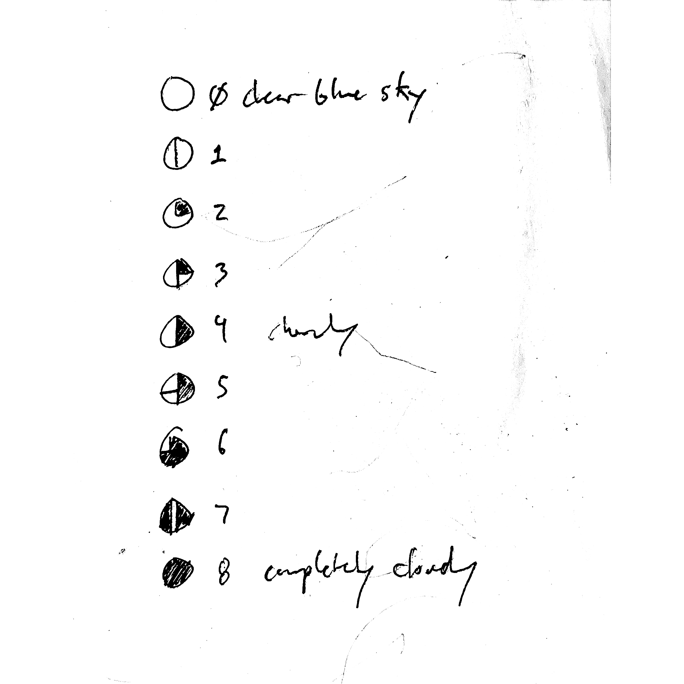

AS01

0 Oktas is a sort of proof of concept for this new label, All Sky,
a place for words, images, sounds, you, me and all of us. A place
to allow it all—sky, earth, dirt, space and time, to be here and
there all at once.
A summer night is magic
Enthralling me so
The night would be tragic
If you weren't here to share it, my dear
Covered with heaven above [1]
The writing reflects a concern for what is here and what is to
come or never happen again. Clouds, or no clouds at all, a
beautiful day, a moment watching the birds flicker through the
trees, the sun in our eyes or nothing at all is precisely what
it is and, as we walk and wait longer and longer, may or may not
be here tomorrow.
Not even the lightest breeze ruffled the
tranquil waters on which my little barque
sailed; no cloud darkened the blue sky. I
felt fully recompensed for all I had gone
through, and I kept saying: "Now I am here
forever." [2]
The music is an insistent tribute to everything else that ever
was and could have been in place of what is offered here. Ideally
there would be something else and unfortunately it’s not quite
discernible. This is something else that is less—but also a
decent alternative, “the best foot forward” to what, ideally, we
should have been doing and undoing all along.
[1] from "Under a Blanket of Blue" by Jerry Livingston,
lyrics by Marty Symes and Al J. Neiburg
[2] Thérèse of Lisieux
~
0 Oktas is a booklet and music. The booklet contains photos and
words. The music is a collection of compositions for cornet and
field recordings made throughout 2022 & 2023 in so-called
Minneapolis & Hovland, Minnesota.
Limited run of 25 booklets with CDs
↵